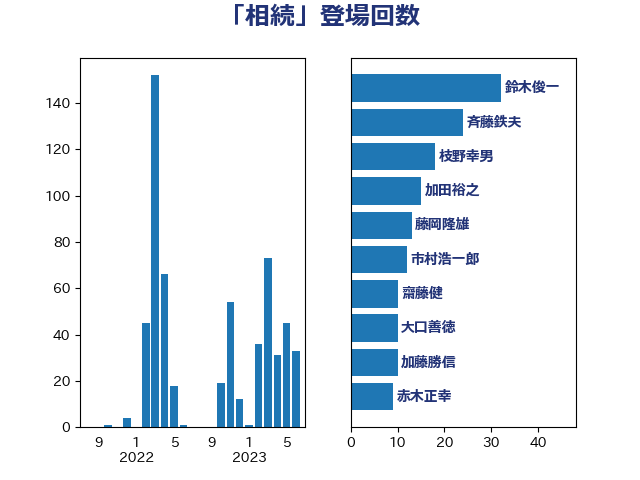

単語「相続」

| 鈴木俊一 | 自由民主党 | 32 回 |
| 斉藤鉄夫 | 公明党 | 24 回 |
| 枝野幸男 | 立憲民主党 | 18 回 |
| 加田裕之 | 自由民主党 | 15 回 |
| 藤岡隆雄 | 立憲民主党 | 13 回 |
| 市村浩一郎 | 日本維新の会 | 12 回 |
| 齋藤健 | 自由民主党 | 10 回 |
| 大口善徳 | 公明党 | 10 回 |
| 加藤勝信 | 自由民主党 | 10 回 |
| 赤木正幸 | 日本維新の会 | 9 回 |
| 美延映夫 | 日本維新の会 | 9 回 |
| 豊田俊郎 | 自由民主党 | 8 回 |
| 東徹 | 日本維新の会 | 7 回 |
| 仁比聡平 | 日本共産党 | 7 回 |
| 長友慎治 | 国民民主党 | 6 回 |
| 塩崎彰久 | 自由民主党 | 6 回 |
| 古川元久 | 国民民主党 | 6 回 |
| 伊藤孝江 | 公明党 | 6 回 |
| 高橋英明 | 日本維新の会 | 5 回 |
| 井林辰憲 | 自由民主党 | 5 回 |
| 中野洋昌 | 公明党 | 5 回 |
| 福島みずほ | 社会民主党 | 4 回 |
| 津島淳 | 自由民主党 | 4 回 |
| 岡本あき子 | 立憲民主党 | 4 回 |
| 吉田はるみ | 立憲民主党 | 4 回 |
| 古賀之士 | 立憲民主党 | 4 回 |
| 上田清司 | 国民民主党 | 4 回 |
| 黄川田仁志 | 自由民主党 | 3 回 |
| 高橋千鶴子 | 日本共産党 | 3 回 |
| 高市早苗 | 自由民主党 | 3 回 |
| 鈴木義弘 | 国民民主党 | 3 回 |
| 進藤金日子 | 自由民主党 | 3 回 |
| 葉梨康弘 | 自由民主党 | 3 回 |
| 米山隆一 | 立憲民主党 | 3 回 |
| 永井学 | 自由民主党 | 3 回 |
| 横山信一 | 公明党 | 3 回 |
| 松野明美 | 日本維新の会 | 3 回 |
| 本村伸子 | 日本共産党 | 3 回 |
| 川田龍平 | 立憲民主党 | 3 回 |
| 岸田文雄 | 自由民主党 | 3 回 |
| 小川淳也 | 立憲民主党 | 3 回 |
| 小宮山泰子 | 立憲民主党 | 3 回 |
| 吉田とも代 | 日本維新の会 | 3 回 |
| 吉井章 | 自由民主党 | 3 回 |
| 勝部賢志 | 立憲民主党 | 3 回 |
| 前川清成 | 日本維新の会 | 3 回 |
| 住吉寛紀 | 日本維新の会 | 3 回 |
| 下条みつ | 立憲民主党 | 3 回 |
| 馬場伸幸 | 日本維新の会 | 2 回 |
| 野田国義 | 立憲民主党 | 2 回 |
| 道下大樹 | 立憲民主党 | 2 回 |
| 落合貴之 | 立憲民主党 | 2 回 |
| 芳賀道也 | 国民民主党 | 2 回 |
| 福島伸享 | 無所属 | 2 回 |
| 牧山ひろえ | 立憲民主党 | 2 回 |
| 浅野哲 | 国民民主党 | 2 回 |
| 河野太郎 | 自由民主党 | 2 回 |
| 松本剛明 | 自由民主党 | 2 回 |
| 末松信介 | 自由民主党 | 2 回 |
| 山本佐知子 | 自由民主党 | 2 回 |
| 小熊慎司 | 立憲民主党 | 2 回 |
| 宮崎政久 | 自由民主党 | 2 回 |
| 塩村あやか | 立憲民主党 | 2 回 |
| 和田政宗 | 自由民主党 | 2 回 |
| 佐藤英道 | 公明党 | 2 回 |
| 中山展宏 | 自由民主党 | 2 回 |
| 鬼木誠 | 立憲民主党 | 1 回 |
| 阿部弘樹 | 日本維新の会 | 1 回 |
| 長妻昭 | 立憲民主党 | 1 回 |
| 金子道仁 | 日本維新の会 | 1 回 |
| 野間健 | 立憲民主党 | 1 回 |
| 若宮健嗣 | 自由民主党 | 1 回 |
| 羽田次郎 | 立憲民主党 | 1 回 |
| 紙智子 | 日本共産党 | 1 回 |
| 神津たけし | 立憲民主党 | 1 回 |
| 石川大我 | 立憲民主党 | 1 回 |
| 石川博崇 | 公明党 | 1 回 |
| 石井苗子 | 日本維新の会 | 1 回 |
| 白石洋一 | 立憲民主党 | 1 回 |
| 田所嘉徳 | 自由民主党 | 1 回 |
| 猪瀬直樹 | 日本維新の会 | 1 回 |
| 牧島かれん | 自由民主党 | 1 回 |
| 源馬謙太郎 | 立憲民主党 | 1 回 |
| 河西宏一 | 公明党 | 1 回 |
| 横沢高徳 | 立憲民主党 | 1 回 |
| 柳本顕 | 自由民主党 | 1 回 |
| 松島みどり | 自由民主党 | 1 回 |
| 本庄知史 | 立憲民主党 | 1 回 |
| 末次精一 | 立憲民主党 | 1 回 |
| 後藤祐一 | 立憲民主党 | 1 回 |
| 川合孝典 | 国民民主党 | 1 回 |
| 岸真紀子 | 立憲民主党 | 1 回 |
| 岡田直樹 | 自由民主党 | 1 回 |
| 岡本三成 | 公明党 | 1 回 |
| 山添拓 | 日本共産党 | 1 回 |
| 小沢雅仁 | 立憲民主党 | 1 回 |
| 小倉將信 | 自由民主党 | 1 回 |
| 塚田一郎 | 自由民主党 | 1 回 |
| 堂込麻紀子 | 無所属 | 1 回 |
| 古川禎久 | 自由民主党 | 1 回 |
| 佐々木さやか | 公明党 | 1 回 |
| 伊藤孝恵 | 国民民主党 | 1 回 |
| 仁木博文 | 無所属 | 1 回 |
| 一谷勇一郎 | 日本維新の会 | 1 回 |
| おおつき紅葉 | 立憲民主党 | 1 回 |